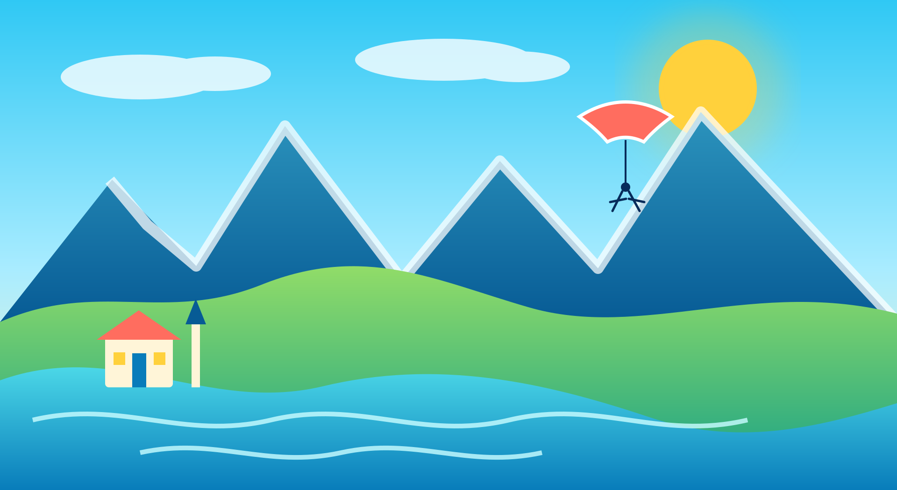

Aravis Parapente
Photos, coordonnées, formules et structure du formulaire de réservation.
aravis-parapente.com ↗Les coordonnées et informations professionnelles sont reliées à leurs sources officielles afin que le visiteur puisse les vérifier directement.

Photos, coordonnées, formules et structure du formulaire de réservation.
aravis-parapente.com ↗Activités, adresse, téléphone et e-mail professionnels.
sandrinecoulaud.fr ↗Fiche officielle de Sandrine Coulaud et informations touristiques associées.
Fiche officielle ↗Bureau des Guides de La Clusaz, programme de randonnées et liste des accompagnateurs.
guides-des-aravis.com ↗Service tiers utilisé pour transmettre les formulaires du site statique à l’adresse e-mail de réception.
formsubmit.co ↗